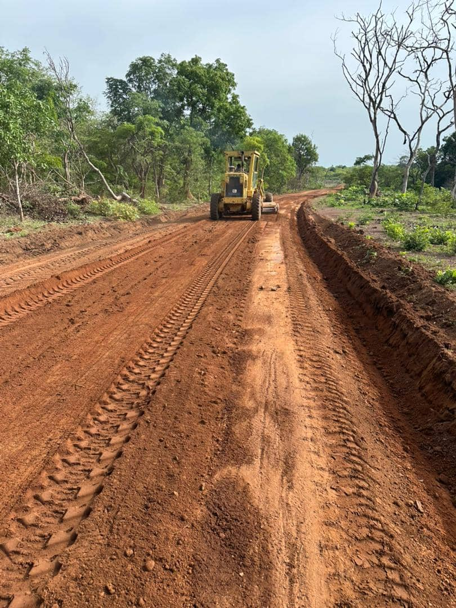
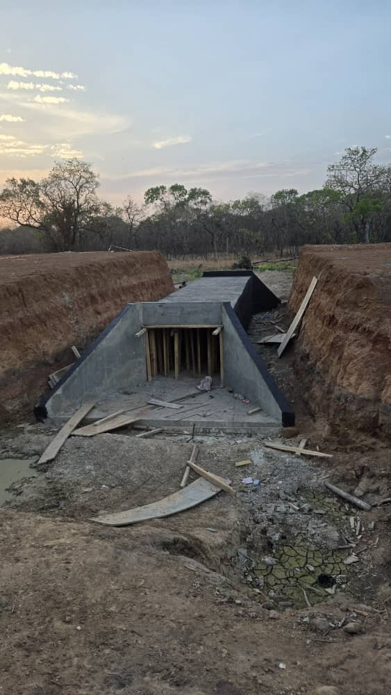
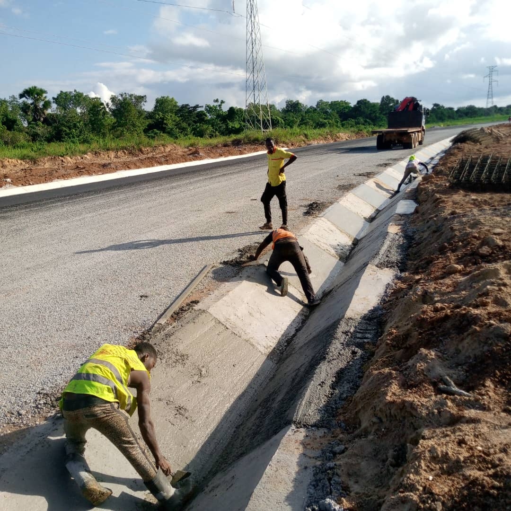
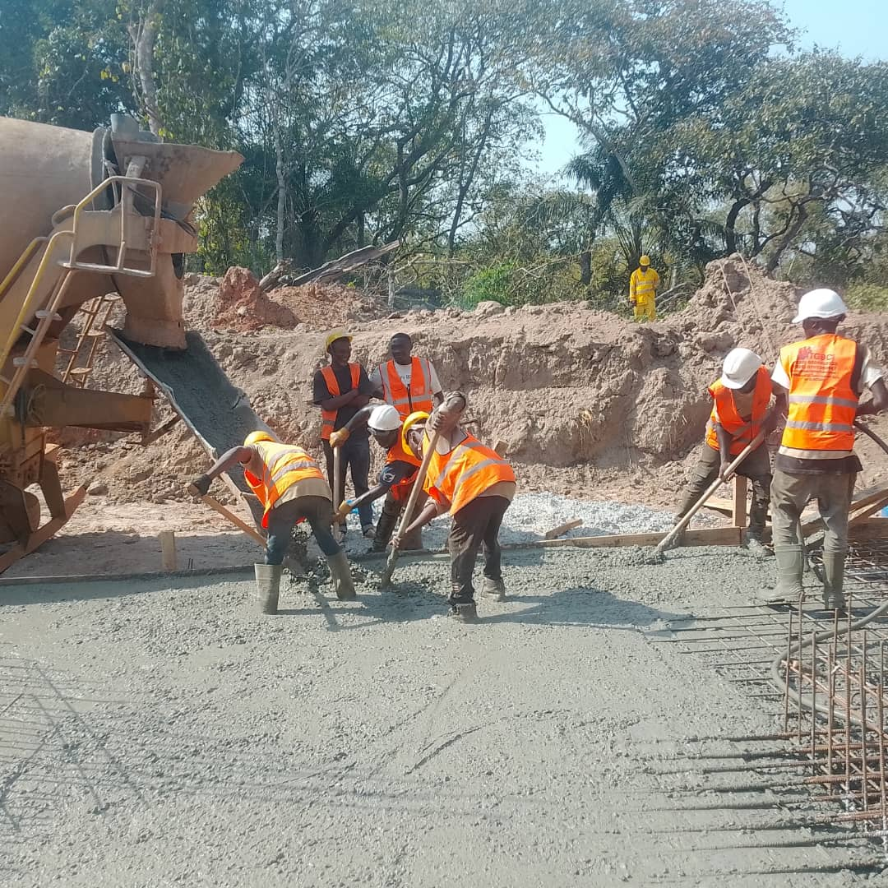

Ouverture des voies
Creation, amenagement et ouverture de voies pour faciliter l'acces aux zones de travaux.
- Preparation du trace
- Degagement des emprises
- Mise en forme des voies
SI BTP SARL
Entreprise specialisee dans la construction, les travaux publics, l'ouverture et la rehabilitation de voies. Nous intervenons avec professionnalisme, qualite et respect des delais.
A propos
Sawadogo Ibrahim BTP, SI BTP SARL, est specialisee dans le domaine du BTP: construction, travaux publics, ouverture et rehabilitation de voies, assainissement et location de materiel de chantier. Notre ambition est de satisfaire chaque client par un travail serieux et durable.
Analyse des besoins, preparation technique et planification claire des interventions.
Des equipes disponibles pour suivre chaque phase du chantier avec precision.
Priorite a la qualite, a la securite et a la satisfaction du client.
Nos services
Creation, amenagement et ouverture de voies pour faciliter l'acces aux zones de travaux.
Travaux de construction et remise en etat d'ouvrages et d'infrastructures BTP.
Mise en place de solutions d'evacuation et d'assainissement pour les chantiers.
Realisation de dalots et ouvrages de franchissement pour la circulation des eaux.
Mise a disposition d'engins et de materiels de chantier pour vos travaux BTP.
Interventions pour les besoins d'electricite generale et rurale lies aux projets.
Evaluation claire de vos besoins afin de preparer un devis adapte a votre chantier.
Nos realisations

Mise en forme d'une piste en terre

Ouvrage d'evacuation des eaux

Assainissement en bord de voie

Execution d'ouvrage sur chantier
Nos engins
Pour vos besoins de construction, ouverture de voies, assainissement et rehabilitation, SI BTP SARL met a disposition des engins et materiels de chantier adaptes aux travaux publics.
Demandez votre devis gratuit et beneficiez de notre expertise.